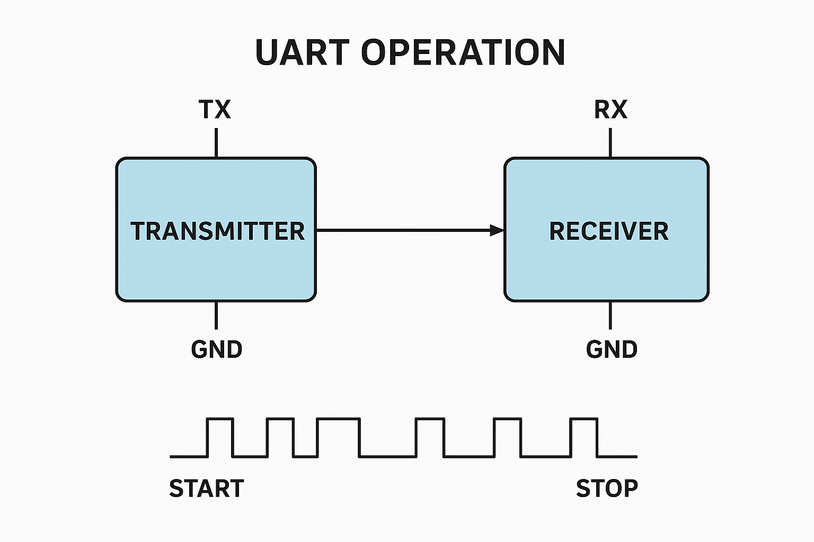
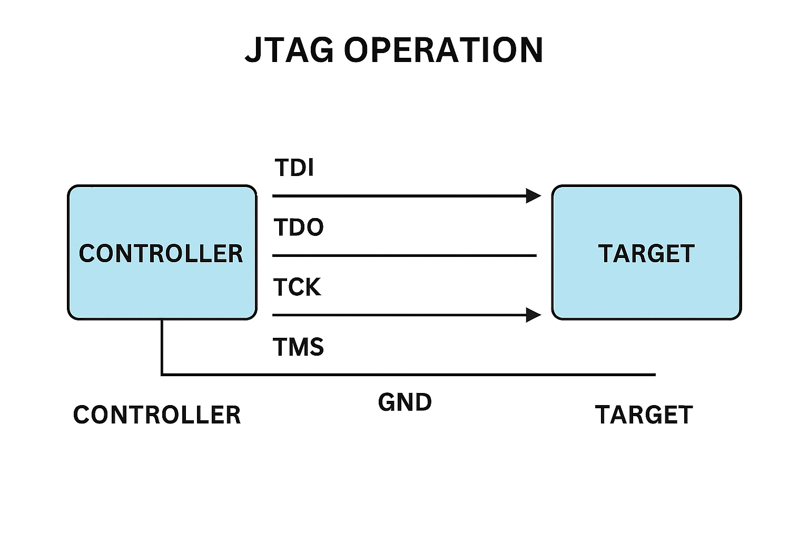
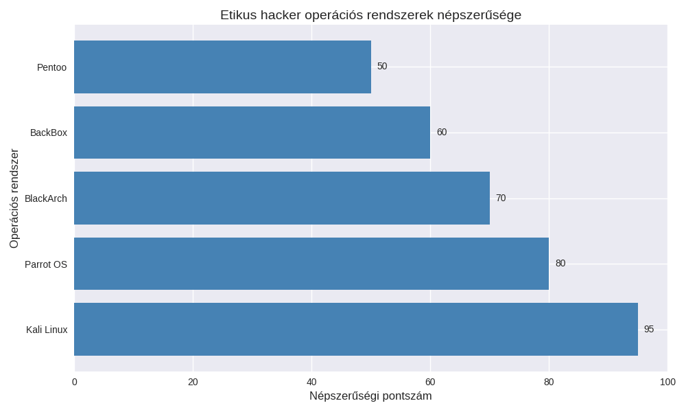
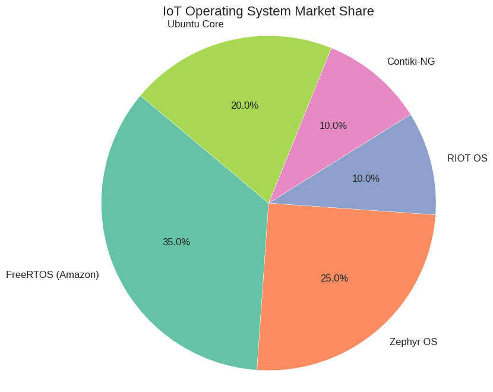
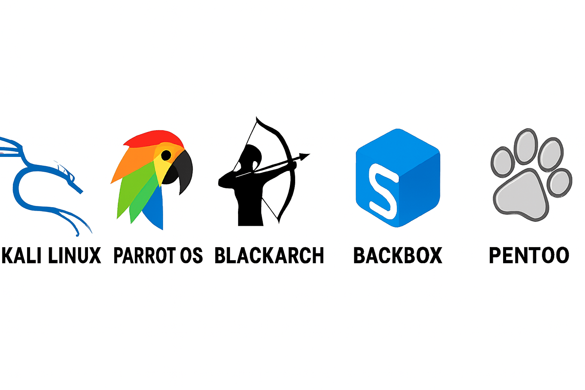

Hogyan tesztelhető egy IoT rendszer biztonsága?
Az IoT rendszerek biztonsági tesztelése etikus hackeléssel (pentest) a sebezhetőségek feltárására és a védelem megerősítésére szolgál.
A folyamat az eszközök, hálózatok és alkalmazások átfogó vizsgálatát jelenti, amely során az etikus hacker valós támadási szcenáriókat szimulál.
Gyenge jelszavak, elavult firmware, hiányos titkosítás.
Internetre kapcsolt eszközök mint belépési pontok.
Érzékeny szenzoradatok kiszivárgásának kockázata.
Az UART (Universal Asynchronous Receiver and Transmitter) egy univerzális aszinkron vevő és adó, ami egy hardvereszköz a számítógépekben és más elektronikus eszközökben, amely az adatok soros továbbítására és vételére szolgál.

A Joint Test Action Group rövidítése, egy iparági szabvány, amelyet nyomtatott áramkörök (PCB-k) gyártás utáni tesztelésére és a tervezésük ellenőrzésére hoztak létre. A technológia lehetővé teszi a beágyazott eszközök soros kommunikációs felületén keresztüli hozzáférést a hardver hibakereséséhez és programozásához

Hardcoded jelszavak a firmware-ben.
Titkosítatlan kommunikáció (pl. HTTPS hiánya).
Nyitott debug interfészek (UART, JTAG).
Frissítési mechanizmus hiánya → eszközök elavulnak és támadhatóvá válnak.
Hibás hozzáférés-kezelés → jogosulatlan felhasználók is hozzáférhetnek.
Az etikus hackerek valós támadásokat utánoznak, hogy a gyenge pontokat még a rosszindulatú támadók előtt feltárják. A folyamat során engedéllyel dolgoznak, és minden eredményt átláthatóan dokumentálnak, segítve a szervezeteket a védelem megerősítésében
#!/bin/bash
# IoT Pentest Automatikus Ellenőrző Script
# Futás: pl. cron jobbal időzítve (pl. hetente)
# IP tartomány (testre szabható)
IP_RANGE="192.168.1.0/24"
# Eredmények logfájl
LOGFILE="/var/log/iot_pentest.log"
DATE=$(date '+%Y-%m-%d %H:%M:%S')
echo "=== IoT Pentest futtatás: $DATE ===" >> $LOGFILE
# 1. Eszközök felderítése
echo "[*] Eszközök felderítése..." >> $LOGFILE
nmap -sn $IP_RANGE -oG - | awk '/Up$/{print $2}' > /tmp/iot_hosts.txt
# 2. Portok és szolgáltatások vizsgálata
echo "[*] Portvizsgálat..." >> $LOGFILE
while read host; do
echo ">>> $host" >> $LOGFILE
nmap -sV -Pn $host >> $LOGFILE
done < /tmp/iot_hosts.txt
# 3. Gyenge jelszavak ellenőrzése (SSH/FTP/Telnet)
echo "[*] Gyenge jelszavak tesztelése..." >> $LOGFILE
for host in $(cat /tmp/iot_hosts.txt); do
hydra -l admin -P /usr/share/wordlists/rockyou.txt ssh://$host >> $LOGFILE
done
# 4. HTTPS ellenőrzés (titkosítás megléte)
echo "[*] HTTPS ellenőrzés..." >> $LOGFILE
for host in $(cat /tmp/iot_hosts.txt); do
curl -Is https://$host --connect-timeout 5 | grep "HTTP" >> $LOGFILE
done
# 5. Firmware verzió lekérdezés (ha van API)
# Példa: REST API endpoint ellenőrzés
for host in $(cat /tmp/iot_hosts.txt); do
echo "[*] Firmware info $host" >> $LOGFILE
curl -s http://$host/api/firmware >> $LOGFILE
done
echo "=== Pentest futás vége ===" >> $LOGFILE
Az etikus hackeléshez és IoT pentesthez használt operációs rendszerek főként olyan IoT-specifikus platformok, amelyek biztonsági funkciókat, könnyű testreszabhatóságot és hálózati protokollok támogatását kínálják. Ezeket a rendszereket gyakran választják kutatók és etikus hackerek, hogy valós környezetben vizsgálják az IoT eszközök sebezhetőségeit.
Text

Ezek az OS-ek futnak ipari szenzorokon, okosotthon eszközökön, egészségügyi IoT rendszereken.
Titkosítás, biztonságos boot, frissítési mechanizmusok vizsgálata.
IPv6, MQTT, CoAP, Bluetooth Low Energy – mind támadási felület lehet.
Ezek az OS-ek gyakran nyílt forráskódúak, így könnyen vizsgálhatók és módosíthatók.

Elterjedtség: Az egyik legszélesebb körben használt RTOS IoT eszközökön.
Biztonsági funkciók: Integrált TLS, titkosítás, AWS IoT Core kompatibilitás.
Etikus hackeléshez: Gyakran vizsgálják a frissítési mechanizmusokat és a hálózati protokollokat.
Elterjedtség: Nyílt forráskódú, Linux Foundation által támogatott.
Biztonsági funkciók: Secure boot, titkosítási modulok, sandboxing.
Etikus hackeléshez: Jó választás protokollok és firmware biztonság tesztelésére.
Elterjedtség: Mikrokontrollerekhez optimalizált, kutatási környezetben népszerű.
Biztonsági funkciók: IPv6, 6LoWPAN, CoAP támogatás.
Etikus hackeléshez: Hálózati protokollok és szenzorhálózatok sebezhetőségeinek vizsgálatára ideális.
Elterjedtség: Szenzorhálózatokban és alacsony fogyasztású IoT eszközökön.
Biztonsági funkciók: Beépített biztonsági modulok, IoT kutatásokban széles körben használt.
Etikus hackeléshez: Gyakran használják energiahatékony hálózatok támadási szimulációjára.
Elterjedtség: Linux-alapú, ipari IoT környezetekben népszerű.
Biztonsági funkciók: Snap csomagok, sandboxing, erős frissítési modell.
Etikus hackeléshez: Alkalmas komplex IoT rendszerek (pl. okosotthon, ipari automatizálás) biztonsági tesztelésére.
Nyílt forráskódúak → könnyen vizsgálhatók és módosíthatók.
Széles körben elterjedtek → valós IoT eszközökön futnak, így relevánsak a teszteléshez.
Biztonsági funkciók beépítve → titkosítás, secure boot, sandboxing.
Kutatási támogatás → aktív közösség és dokumentáció segíti az etikus hackereket.
